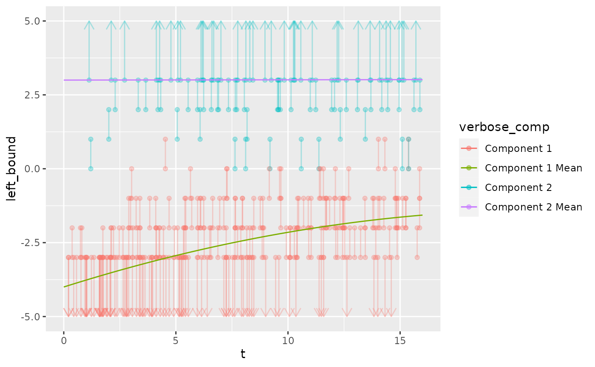
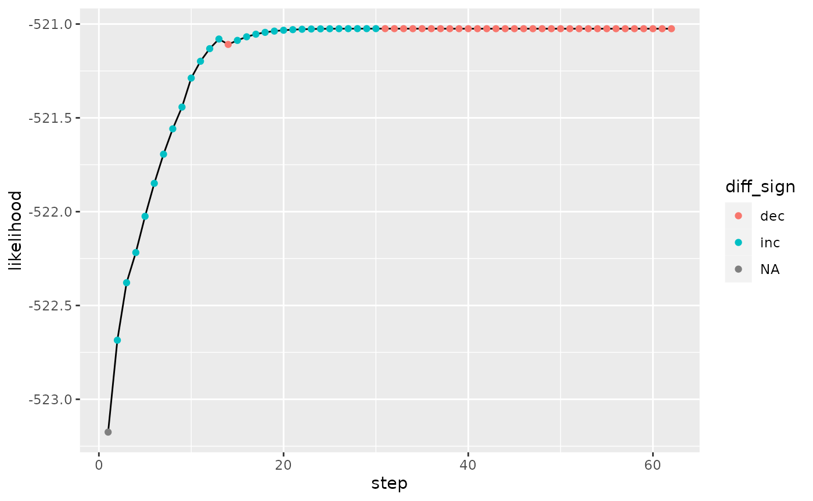
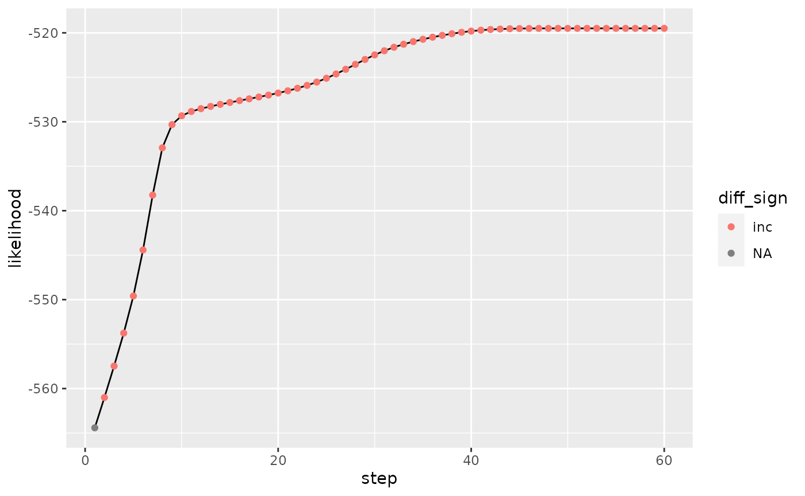

Do Polynomial Regressions Result in Likelihood Drops?
Source:vignettes/polynomial_vs_pspline.Rmd
polynomial_vs_pspline.Rmd
library(mic.sim)
library(mgcv)
#> Loading required package: nlme
#> This is mgcv 1.9-0. For overview type 'help("mgcv-package")'.
library(dplyr)
#>
#> Attaching package: 'dplyr'
#> The following object is masked from 'package:nlme':
#>
#> collapse
#> The following objects are masked from 'package:stats':
#>
#> filter, lag
#> The following objects are masked from 'package:base':
#>
#> intersect, setdiff, setequal, union
library(ggplot2)
library(ggnewscale)
library(survival)
set.seed(1)
n = 300
ncomp = 2
pi = function(t) {
z <- 0.07 + 0.03 * t - 0.00045 * t^2
#z <- (1+ exp(-m))^-1 #if exp(m) gets large, it won't add the 1 so we write like this
tibble("1" = 1 - z, "2" = z)
}
`E[X|T,C]` = function(t, c)
{
case_when(
c == "1" ~ -4.0 + (0.24 * t) - (0.0055 * t^2),
c == "2" ~ 3 + 0.001 * t,
TRUE ~ NaN
)
}
t_dist = function(n){runif(n, min = 0, max = 16)}
attr(t_dist, "min") = 0
attr(t_dist, "max") = 16
sd_vector = c("1" = 1, "2" = 1.05)
low_con = -3
high_con = 3
scale = "log"
example_data = simulate_mics(n = n, t_dist = t_dist, pi = pi, `E[X|T,C]` = `E[X|T,C]`, sd_vector = sd_vector, covariate_list = NULL, covariate_effect_vector = c(0), low_con = low_con, high_con = high_con, scale = "log") %>% suppressMessages()
example_data %>%
mutate(verbose_comp = case_when(
comp == 1 ~ "Component 1",
TRUE ~ "Component 2"
)) %>%
ggplot() +
geom_segment(aes(x = t, xend = t, y = left_bound, yend = right_bound, color = verbose_comp), data = (. %>% filter(left_bound != -Inf & right_bound != Inf)), alpha = 0.3) +
geom_segment(aes(x = t, xend = t, y = right_bound, yend = left_bound, color = verbose_comp), data = (. %>% filter(left_bound == -Inf) %>% mutate(left_bound = low_con - 2)), arrow = arrow(length = unit(0.03, "npc")), alpha = 0.3) +
geom_segment(aes(x = t, xend = t, y = left_bound, yend = right_bound, color = verbose_comp), data = (. %>% filter(right_bound == Inf) %>% mutate(right_bound = high_con + 2)), arrow = arrow(length = unit(0.03, "npc")), alpha = 0.3) +
geom_point(aes(x = t, y = left_bound, color = verbose_comp), data = . %>% filter(left_bound != -Inf), alpha = 0.3) +
geom_point(aes(x = t, y = right_bound, color = verbose_comp), data = . %>% filter(right_bound != Inf), alpha = 0.3) +
geom_function(fun = function(t){`E[X|T,C]`(t, c = "1")}, aes(color = "Component 1 Mean")) +
geom_function(fun = function(t){`E[X|T,C]`(t, c = "2")}, aes(color = "Component 2 Mean")) +
xlim(attr(t_dist, "min") ,attr(t_dist, "max")) +
ylim(low_con - 2, high_con + 2)
When using pspline, we see decreased in log likelihood over steps of the model
output_pspline = EM_algorithm_surv(example_data, mu_formula = Surv(time = left_bound, time2 = right_bound, type = "interval2") ~ pspline(t, df = 0, caic = TRUE), verbose = 0, pause_on_likelihood_drop = FALSE)
#> Warning in EM_algorithm_surv(example_data, mu_formula = Surv(time = left_bound,
#> : Log Likelihood decreased
#> Warning in EM_algorithm_surv(example_data, mu_formula = Surv(time = left_bound,
#> : Log Likelihood decreased
#> Warning in EM_algorithm_surv(example_data, mu_formula = Surv(time = left_bound,
#> : Log Likelihood decreased
#> Warning in EM_algorithm_surv(example_data, mu_formula = Surv(time = left_bound,
#> : Log Likelihood decreased
#> Warning in EM_algorithm_surv(example_data, mu_formula = Surv(time = left_bound,
#> : Log Likelihood decreased
#> Warning in EM_algorithm_surv(example_data, mu_formula = Surv(time = left_bound,
#> : Log Likelihood decreased
#> Warning in EM_algorithm_surv(example_data, mu_formula = Surv(time = left_bound,
#> : Log Likelihood decreased
#> Warning in EM_algorithm_surv(example_data, mu_formula = Surv(time = left_bound,
#> : Log Likelihood decreased
#> Warning in EM_algorithm_surv(example_data, mu_formula = Surv(time = left_bound,
#> : Log Likelihood decreased
#> Warning in EM_algorithm_surv(example_data, mu_formula = Surv(time = left_bound,
#> : Log Likelihood decreased
#> Warning in EM_algorithm_surv(example_data, mu_formula = Surv(time = left_bound,
#> : Log Likelihood decreased
#> Warning in EM_algorithm_surv(example_data, mu_formula = Surv(time = left_bound,
#> : Log Likelihood decreased
#> Warning in EM_algorithm_surv(example_data, mu_formula = Surv(time = left_bound,
#> : Log Likelihood decreased
#> Warning in EM_algorithm_surv(example_data, mu_formula = Surv(time = left_bound,
#> : Log Likelihood decreased
#> Warning in EM_algorithm_surv(example_data, mu_formula = Surv(time = left_bound,
#> : Log Likelihood decreased
#> Warning in EM_algorithm_surv(example_data, mu_formula = Surv(time = left_bound,
#> : Log Likelihood decreased
#> Warning in EM_algorithm_surv(example_data, mu_formula = Surv(time = left_bound,
#> : Log Likelihood decreased
#> Warning in EM_algorithm_surv(example_data, mu_formula = Surv(time = left_bound,
#> : Log Likelihood decreased
#> Warning in EM_algorithm_surv(example_data, mu_formula = Surv(time = left_bound,
#> : Log Likelihood decreased
#> Warning in EM_algorithm_surv(example_data, mu_formula = Surv(time = left_bound,
#> : Log Likelihood decreased
#> Warning in EM_algorithm_surv(example_data, mu_formula = Surv(time = left_bound,
#> : Log Likelihood decreased
#> Warning in EM_algorithm_surv(example_data, mu_formula = Surv(time = left_bound,
#> : Log Likelihood decreased
#> Warning in EM_algorithm_surv(example_data, mu_formula = Surv(time = left_bound,
#> : Log Likelihood decreased
#> Warning in EM_algorithm_surv(example_data, mu_formula = Surv(time = left_bound,
#> : Log Likelihood decreased
#> Warning in EM_algorithm_surv(example_data, mu_formula = Surv(time = left_bound,
#> : Log Likelihood decreased
#> Warning in EM_algorithm_surv(example_data, mu_formula = Surv(time = left_bound,
#> : Log Likelihood decreased
#> Warning in EM_algorithm_surv(example_data, mu_formula = Surv(time = left_bound,
#> : Log Likelihood decreased
#> Warning in EM_algorithm_surv(example_data, mu_formula = Surv(time = left_bound,
#> : Log Likelihood decreased
#> Warning in EM_algorithm_surv(example_data, mu_formula = Surv(time = left_bound,
#> : Log Likelihood decreased
#> Warning in EM_algorithm_surv(example_data, mu_formula = Surv(time = left_bound,
#> : Log Likelihood decreased
#> Warning in EM_algorithm_surv(example_data, mu_formula = Surv(time = left_bound,
#> : Log Likelihood decreased
#> Warning in EM_algorithm_surv(example_data, mu_formula = Surv(time = left_bound,
#> : Log Likelihood decreased
#> Warning in EM_algorithm_surv(example_data, mu_formula = Surv(time = left_bound,
#> : Log Likelihood decreased
plot_likelihood(output_pspline$likelihood, format = "tibble")
But when using polynomials in place of splines, it appears to avoid the drops
initial_data = example_data %>% mutate(obs_id = row_number(), t2 = (t^2), t3 = (t^3)) %>% select(obs_id, everything()) %>%
initial_weighting_fixed_regression_at_boundaries(., 2, 1)
max_it = 60
likelihood_documentation = matrix(data = NA, nrow = max_it, ncol = 5)
likelihood_documentation [,1] <- 1:max_it
possible_data = initial_data %>% mutate(
left_bound_mgcv =
case_when(
left_bound == -Inf ~ right_bound,
TRUE ~ left_bound
),
right_bound_mgcv =
case_when(
left_bound == -Inf ~ -Inf,
TRUE ~ right_bound
)
)
models = list()
for(i in 1:max_it){
#print(i)
if(i != 1){
mu_models_old = mu_models_new
pi_model_old = pi_model_new
log_likelihood_old = log_likelihood_new
possible_data_old = possible_data
}
mu_model = function(possible_data, pred_comp){
possible_data %>% filter(c == pred_comp & `P(C=c|y,t)` > 0) %>%
mutate(`P(C=c|y,t)` = paste0(`P(C=c|y,t)`) %>% as.numeric) %>%
survival::survreg(Surv(time = left_bound,
time2 = right_bound,
type = "interval2") ~ poly(t, degree = 3),
weights = `P(C=c|y,t)`,
data = .,
dist = "gaussian") %>% return()
}
mu_models_new = purrr::map(1:2, ~mu_model(possible_data = possible_data, pred_comp = .x))
pi_model_new = mgcv::gam(c == "2" ~ s(t), family = binomial(link = "logit"), data = possible_data, weights = `P(C=c|y,t)`, method = "ML") %>% suppressWarnings()
possible_data %<>%
mutate(
`E[Y|t,c]` = case_when(c == "1" ~ predict(mu_models_new[[1]], newdata = possible_data),
c == "2" ~ predict(mu_models_new[[2]], newdata = possible_data),
TRUE ~ NaN),
`sd[Y|t,c]` = case_when(c == "1" ~ mu_models_new[[1]]$scale,
c == "2" ~ mu_models_new[[2]]$scale, #1,
TRUE ~ NaN),
`P(Y|t,c)` = case_when(
left_bound == right_bound ~ dnorm(x = left_bound, mean = `E[Y|t,c]`, sd = `sd[Y|t,c]`),
left_bound <= `E[Y|t,c]` ~ pnorm(right_bound, mean = `E[Y|t,c]`, sd = `sd[Y|t,c]`) -
pnorm(left_bound, mean = `E[Y|t,c]`, sd = `sd[Y|t,c]`),
TRUE ~ pnorm(left_bound, mean = `E[Y|t,c]`, sd = `sd[Y|t,c]`, lower.tail = FALSE) -
pnorm(right_bound, mean = `E[Y|t,c]`, sd = `sd[Y|t,c]`, lower.tail = FALSE)),
`P(C=c|t)` = case_when(
c == "2" ~ predict(pi_model_new, newdata = tibble(t = t), type = "response"),
c == "1" ~ 1 - predict(pi_model_new, newdata = tibble(t = t), type = "response")),
`P(c,y|t)` = `P(C=c|t)` * `P(Y|t,c)`
) %>%
mutate(.by = obs_id,
`P(Y=y|t)` = sum(`P(c,y|t)`)) %>%
mutate(
`P(C=c|y,t)` = `P(c,y|t)` / `P(Y=y|t)`)
log_likelihood_obs = possible_data %>%
summarise(.by = obs_id, likelihood_i = sum(`P(c,y|t)`)) %>%
mutate(log_likelihood_i = log(likelihood_i))
log_likelihood_new = sum(log_likelihood_obs$log_likelihood_i)
likelihood_documentation[i, 2] = log_likelihood_new
models[[i]] = list(mu = mu_models_new, pi = pi_model_new, data = possible_data)
}
plot_likelihood(likelihood_documentation, format = "matrix")